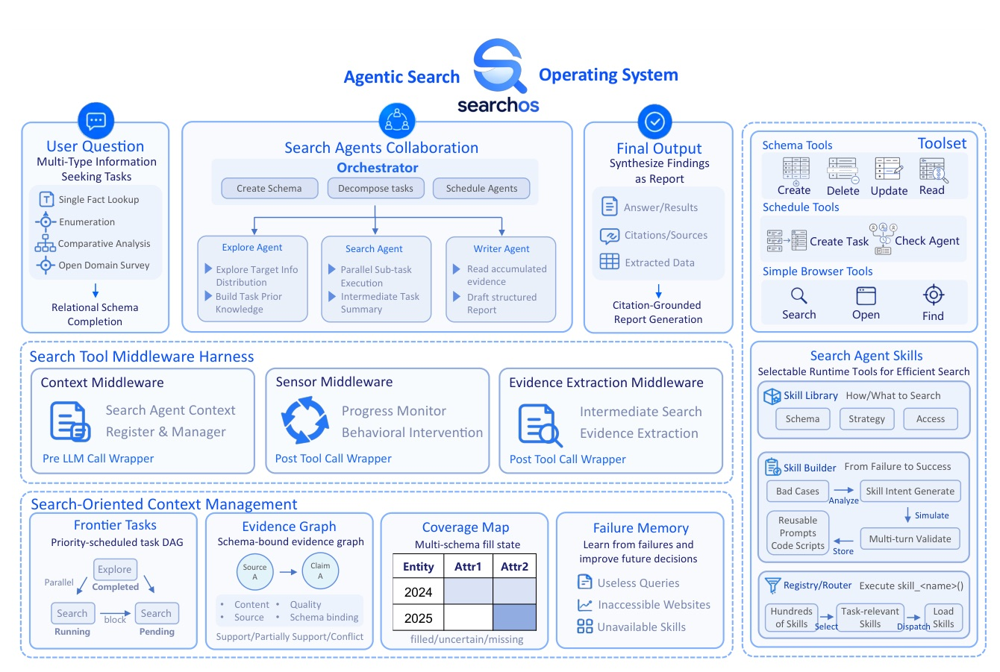
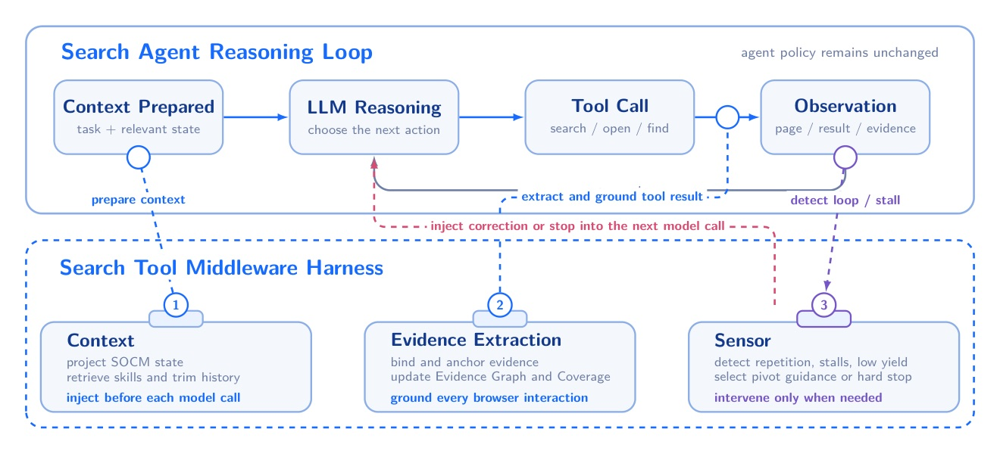
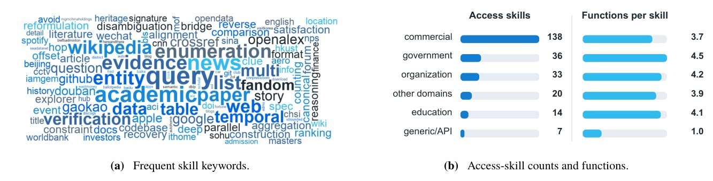
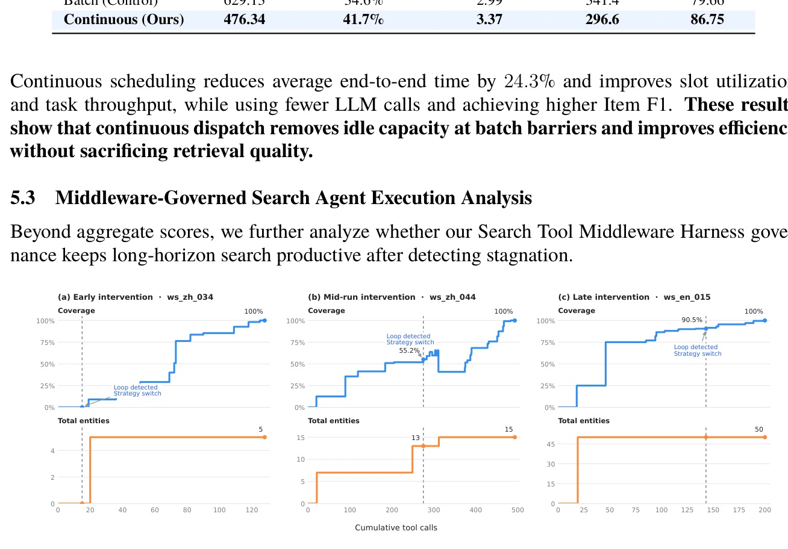

Towards Robust Open-Domain Information-Seeking Agent Collaboration
Search agents do not only need more browsing; they need an operating state that remembers coverage, evidence, failures, and unfinished work.

Evidence Graph
Coverage Map

Evidence acceptance
Only schema-bound, span-anchored candidates update G and C.
Stall sensor
Actions: continue, correction, backfill, drain-only, or stop branch.

| Component | Details |
|---|---|
| Benchmarks | WideSearch: 200 wide-search questions across >15 domains; GISA: 373 human-crafted item/set/list/table queries. |
| Baselines | ReAct, Plan-and-Solve, Table-as-Search, A-MapReduce, Web2BigTable. |
| Backbones | GLM-5 for agent roles; Qwen3.5-35B-A3B for Evidence Extraction. |
| Budget | Max@3; 50 orchestrator iterations; 8 parallel sub-agents; 20 searches/sub-agent; 1800s. |
| Metric | Best baseline | SearchOS | Delta |
|---|---|---|---|
| WideSearch Item F1 | 76.0 | 80.3 | +4.3 |
| WideSearch Row F1 | 54.5 | 56.5 | +2.0 |
| GISA Table Item F1 | 74.8 | 76.9 | +2.1 |
| GISA Table Row F1 | 58.1 | 59.7 | +1.6 |
| GISA Set F1 | 63.1 | 76.5 | +13.4 |
| GISA List F1 | 67.1 | 68.1 | +1.0 |
The improvement is mostly a recall and completeness story, not a precision-only story.
| Setting | Item F1 | Row F1 | Interpretation |
|---|---|---|---|
| Fixed Single-Table | 47.9 | 29.2 | Too rigid |
| Fixed Multi-Table | 58.3 | 34.2 | Better on average |
| Oracle Single/Multi | 62.4 | 41.2 | Best fixed per case |
| SearchOS | 70.6 | 48.9 | Planning stays in loop |
Across 40 cases, SearchOS selected single-table for 35 tasks and multi-table for 5.
| Policy | Time | Utilization | Tasks/min | LLM calls | Item F1 |
|---|---|---|---|---|---|
| Batch | 629.13s | 34.6% | 2.99 | 341.4 | 79.66 |
| Continuous | 476.34s | 41.7% | 3.37 | 296.6 | 86.75 |

| Setting | Item F1 | Row F1 |
|---|---|---|
| Without skills | 78.3 | 53.1 |
| With skills | 80.3 | 56.5 |
| Delta | +2.0 | +3.4 |
Same 100 WideSearch questions; Figure 6 reports efficiency with 95% CIs.
For serious agents, state is product architecture, not prompt decoration.
These failures arise because conventional agents treat plans, progress, evidence, and failures as transient conversation content.
這篇的核心判斷是：失敗不是因為模型不會搜尋，而是因為計畫、進度、證據與失敗都被放在短暫對話裡。§1 p.2
This state resides outside agent conversations and uses locked read-modify-write updates.
SOCM 把狀態移出對話，並用鎖定的讀改寫更新，避免多 agent 看到互相不一致的搜尋世界。§3.1 p.5
Because the harness enforces these transitions outside prompts, the same safeguards apply across models and roles.
中介層把停滯偵測、預算與修正動作移到 prompt 之外，因此安全閥不依賴某個 agent 自己記得遵守。§3.3 p.8
The quality gains therefore come with less exploratory trial and error rather than additional browsing.
skill 的收益不是暴力多查，而是減少試錯與重複瀏覽，這對長程 search agent 的成本很關鍵。§5.4 p.13
Explicit shared search state, continuous orchestration, middleware-governed execution, and reusable skills.